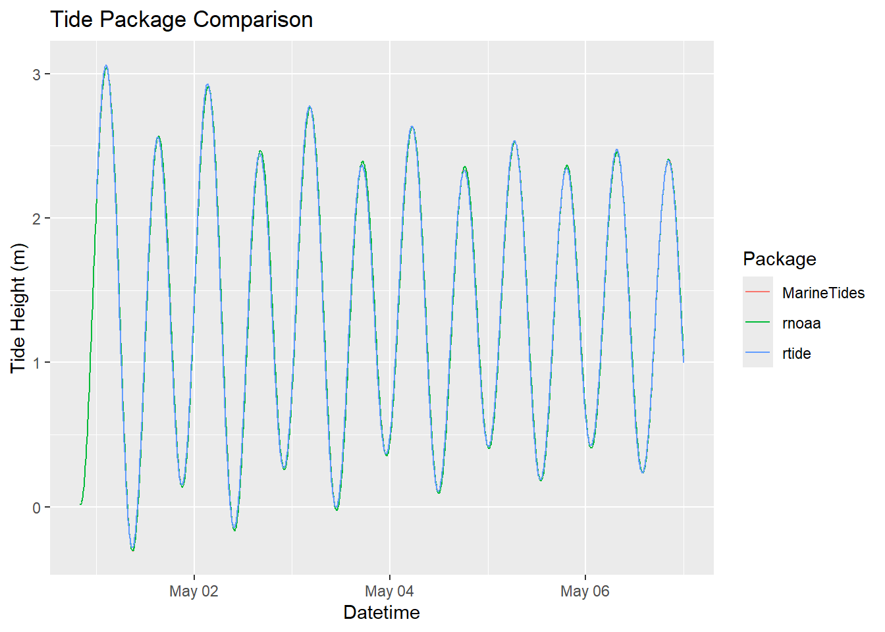
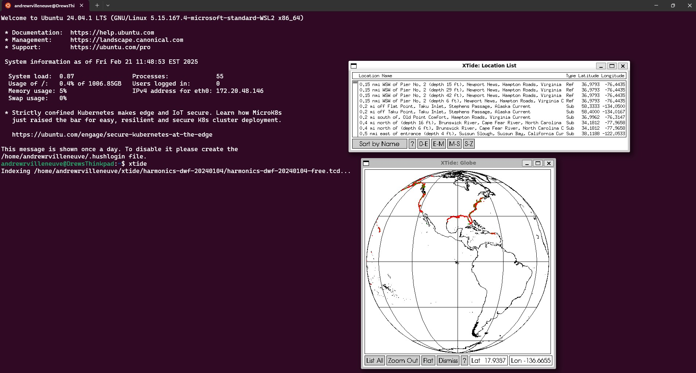
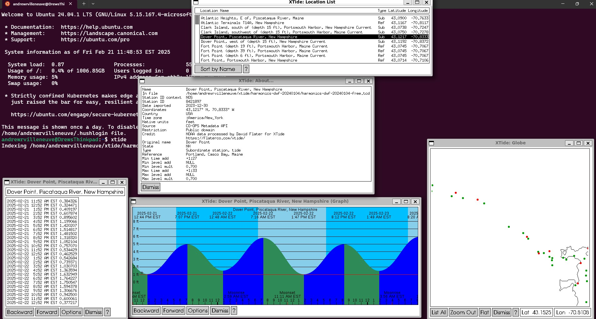
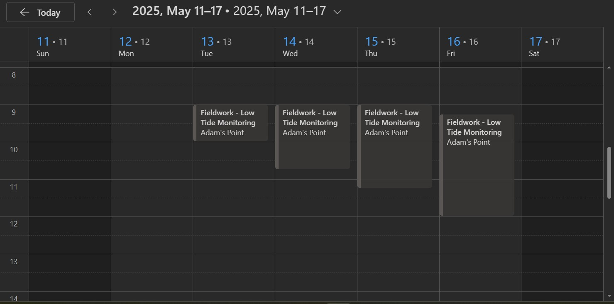

Ask any intertidal ecologist what they think of first when planning fieldwork, and they will respond with “when are the low tides?”. Indeed, we love studying intertidal systems because they are such an accessible window into the marine world, while adding the added dynamics of tidal cycles onto how organisms respond to their environment and other organisms.
What any intertidal ecologist will also tell you is that tides wait for no one. The low tides we often seek to access to the lowest tidal elevations for longer periods of time do not abide by the frivolous 9-5 schedule humans like to keep. Many an intertidal ecologist has stories of working at 3:30 AM in a cold drizzle because that simply is the best time to work for the next few weeks.
Anyone know when the tide is comin’ back in?
Recently, another grad student and myself were trying to figure out how many days each week for the oncoming summer could we count on for decent field work. Normally, one might need to scroll through a tide app or the NOAA CO-OPS tide predictions website to identify these times, which can be tedious if one is trying to plan an entire field season. I decided there had to be a better way to automate this process, and of course there is - using R! Below, we will 1) collect tide prediction data, 2) filter times and tide heights during which we want to do field work, and 3) create an .ics calendar file that we can later add to commonly used internet calendars, like Outlook and Google Calendar.
Important note: the data we produce below is NOT intended for navigation purposes, ESPECIALLY for the predictions from subordinate stations!!
(Chamberlain 2021) provides access to harmonic-only sites, which are great if those are close enough to your field site
(Thorley, Miller, and Fleishman 2021) provides a faster interface that directly uses the tidal harmonics, not requiring an internet connection, and works over more sites. It draws on the same dataset as XTide, a UNIX-based program with a very extensive set of tide stations. However, the package authors have only included harmonics stations in the dataset.
(Strom 2025) has the most extensive database of tide sites, including subordinate sites, in both the US and internationally. It also draws on the same dataset as XTide.
First, let’s download data using rnoaa. I am most interested in tides in Great Bay, NH, but sadly the closest site in the CO_OPS harmonics database is Seavey Island in the Piscataqua River. We lookup the station ID on the CO_OPS website, and add our dates of interest (we will use the same dates for all three R methods). Unfortunately, rnoaa only lets us download 31 days of data at a time, so we will need to set up a function to download each month.
dl_months<-data.frame(date_index=1:5,begin_dates=c(20250501,20250601,20250701,20250801,20250901),end_dates=c(20250530,20250630,20250731,20250831,20250930))site_id=8419870rnoaa_func<-function(time_df){ rnoaa_output<-coops_search(station_name = site_id,begin_date = time_df$begin_dates,end_date=time_df$end_dates,product ="predictions", #we want tide PREDICTIONs. If we watned past heights, could use "hourly_height")datum ="MLLW", #MLLW datum, which is standard at Seaveyunits ="metric")$predictions%>%# we will convert this to feet for us Americans later :) dplyr::rename(datetime=t,tide_height=v)%>% dplyr::mutate(datetime=with_tz(as.POSIXct(datetime,format="%Y-%m-%d %H:%M",tz="GMT")),tz="America/New_York")}system.time( rnoaa_output_seavey<-dl_months%>%group_by(date_index)%>%group_modify(~rnoaa_func(.x))%>%ungroup())
Note that the output of rnoaa defaults to every 6 minutes (10 obs/hour), which is an odd way to slice data IMO. You could always go back and select every 15 minutes, or interpolate to every minute. Also note that the datetime comes back to us in GMT only, so we must force a time zone conversion to eastern time. This does mean you won’t get the full last day of your time series due to the shift in the timezone, so worth adding an extra day just in case
rtide
Let’s try to do the same with rtide, getting closer to our field site if we can. Unfortunately, the Dover site is way upstream in the Cocheco River and not very relevant to us. So, let’s get the Seavey Island data again.
stations<-rtide::tide_stations()stations[str_detect(stations, "New Hampshire")] #some tidyverse magic to search for our state.
[1] "Dover, Cocheco River, Piscataqua River, New Hampshire"
[2] "Fort Point, Portsmouth Harbor, New Hampshire"
[3] "Seavey Island, Portsmouth Harbor, New Hampshire"
system.time(rtide_output_seavey<-tide_height(stations ="Seavey Island, Portsmouth Harbor, New Hampshire" ,minutes =6L, #nice! We can select our precisionfrom =as.Date("2025-05-01"),to =as.Date("2025-09-30"),tz ="America/New_York",harmonics = rtide::harmonics))
user system elapsed
22.08 2.12 24.77
head(rtide_output_seavey)
# A tibble: 6 × 3
Station DateTime TideHeight
<chr> <dttm> <dbl>
1 Seavey Island, Portsmouth Harbor, New Hampshire 2025-05-01 00:00:00 2.13
2 Seavey Island, Portsmouth Harbor, New Hampshire 2025-05-01 00:06:00 2.20
3 Seavey Island, Portsmouth Harbor, New Hampshire 2025-05-01 00:12:00 2.27
4 Seavey Island, Portsmouth Harbor, New Hampshire 2025-05-01 00:18:00 2.34
5 Seavey Island, Portsmouth Harbor, New Hampshire 2025-05-01 00:24:00 2.40
6 Seavey Island, Portsmouth Harbor, New Hampshire 2025-05-01 00:30:00 2.46
MarineTides
MarineTides is a very robust r package for getting ride information because 1) it uses data.table and is thus faster, and 2) allows the user to download subordiante data! This to me is critical, as it allows us to get a much closer station to our field site. Unfortunately, it only returns tide high and lows for subordinate sites, rather than predictions on a minute-basis.
I do know the CO-OPS name for the subordinate site of interest is at Dover Point, so let’s confirm it’s there. Let’s get data from both Seavey Island and Dover Point
Seavey Island is a reference station. Tide heights are
calculated from Seavey Island harmonic constituents.
Tides will be predicted from 2025-05-01 to 2025-09-30
user system elapsed
1.60 0.00 1.63
head(MarineTides_output_seavey)
station_code station_name reference_station_code tide_type
<char> <char> <char> <char>
1: 8419870 Seavey Island 8419870 P
2: 8419870 Seavey Island 8419870 P
3: 8419870 Seavey Island 8419870 P
4: 8419870 Seavey Island 8419870 P
5: 8419870 Seavey Island 8419870 P
6: 8419870 Seavey Island 8419870 P
tide_time tide_level
<POSc> <units>
1: 2025-05-01 00:00:00 2.098570 [m]
2: 2025-05-01 00:06:00 2.166778 [m]
3: 2025-05-01 00:12:00 2.233378 [m]
4: 2025-05-01 00:18:00 2.298212 [m]
5: 2025-05-01 00:24:00 2.361124 [m]
6: 2025-05-01 00:30:00 2.421967 [m]
Let’s do it again, but for a subordinate site Dover Point.
Dover Point is a subordinate station. The reference station,
Portland, is located 76.35 km. away. Tide levels are
calculated from Portland harmonic constituents at one
minute increments. Values for high and low tide are extracted,
then time and height offset corrections are applied to obtain the
Dover Point predictions.
Tides will be predicted from 2025-05-01 to 2025-09-30
Warning in MarineTides::tide_level(tide_station = "Dover Point", start_date = "2025-05-01", :
For subordinate stations, only high and low tide values will be computed.
user system elapsed
0.56 0.00 0.57
head(MarineTides_output_dover)
station_code station_name reference_station_code tide_type
<char> <char> <char> <char>
1: 8421897 Dover Point 8418150 H
2: 8421897 Dover Point 8418150 L
3: 8421897 Dover Point 8418150 H
4: 8421897 Dover Point 8418150 L
5: 8421897 Dover Point 8418150 H
6: 8421897 Dover Point 8418150 L
tide_time tide_level
<POSc> <units>
1: 2025-05-01 03:33:00 2.40556719 [m]
2: 2025-05-01 09:57:00 -0.27604658 [m]
3: 2025-05-01 16:18:00 2.04071289 [m]
4: 2025-05-01 22:12:00 0.08293358 [m]
5: 2025-05-02 04:33:00 2.28938917 [m]
6: 2025-05-02 10:57:00 -0.15398555 [m]
So not only is this fast, but it gets us information on both harmonic and subordinate sites! So, I know why the programmers of MarineTides did not give us the capacity to predict tides from subordinate sites - we can only set subordinate site offsets based on the timing of high or low tides. If we tried to predict a subordinate station, we basically would just shift the time and height based on the offset. BUT we could do it, as long as we acknowledge that the tide harmonics are not calculated for these sites, and thus the shape of the tidal series in between extreme are not known. To quote the XTide developer David Flater, “All subordinate station predictions are approximate”
Quick gut check to make sure our timezones are correct, and to see if any one method seems to depart from the other! They all look good, note again rnoaa has an earlier start date due to that GMT data fetch.

XTIDE
XTide is an awesome UNIX tide prediction program that I use for much of our intertidal work because it provides predictions over harmonic and subordinate stations. Nifty!
To install, follow the instructions on the XTide installation page and the Port page for non-UNIX systems. It is a little involved, especially on Windows machines. I ended up installing a Windows Subsystem for Linux (WSL) to run Ubuntu. Here is another possibility using a BIOS builder. Note that you might want to download additional files, like the global shapefiles, if you want to use the GUI application as well as Xtide from the command line. I am not anywhere close to knowing what I am doing when it comes to Linux, so the help pages and google are your friends here.
Once you have Xtide downloaded, you can play around with the GUI which is fun!

Starting screen of Xtide

Dover Point subordinate station in Xtide showing various data products
You can even directly download the data from these windows. But, I prefer just being able to get my data through command line. Take a look at the command line options, as well as the data types we can request. To translate this code into english, we are requesting data from
Dover Point between
May 1st, 2025 and
September 30th, 2025 in
.csv format. The data type will be
“medium rare,” which gives us datetime stamps along with tide height, and it will give it to us every
15 minutes. Save the file at the location
“xtide/2025summer_dover.csv”, which is a pre-existing, empty .csv file in my root Linux directory.
tide -l "Dover Point, Piscataqua River, New Hampshire" -b "2025-05-01 00:00" -e "2025-09-30 00:00" -f c -m m -s "00:15" -o "2025summer_dover.csv"
Also, maybe you just want an .ics file of tide hight and lows? Simple!
tide -l "Dover Point, Piscataqua River, New Hampshire" -b "2025-05-01 00:00" -e "2025-09-30 00:00" -f i -m c -o "xtide/2025summer_dover.ics"
Once we run the medium rare code (first code block), we have the requested tide predictions at our subordinate site. We are now ready to move on to creating a custom intertidal fieldwork calendar in R.
Intertidal Field Calendar in R
Once we have the tidal data from a site we want, we can begin creating a field calendar. When I created this code, I had 3 goals:
Remove times and days of week that we don’t want to do field work from consideration. Maybe I’m getting soft (or I am no longer doing intertidal field work for my dissertation), but I’d like to not schedule field work during the weekends, before 8 AM, or after 6 PM.
I want the length of the calendar event to start and end as soon as tide conditions at my chosen site are conducive. For example, I want to start tidal work as soon as the tide dips below 1ft at Dover Point, and stop field work once the tide rises back to 1ft.
I want my calendar event to contain information about the length of time the tide is below my chosen height (1ft), as well as the time of dead low and the length of the low tide.
Let’s get started. I ended up using data I downloaded from XTide (), so it may be formatted differently than if you use another source. One important feature we implemented is an additional time offset from the subordinate station (physical oceanographers cringe here) based on our field observations of when low tide occurs at Adams Point compared to Dover Point. We add 45 minutes to the entire tide series to make it approximate our actual field site.
dover_2025<-read.csv("2025summer_dover.csv",col.names=c("site","date","time","tide"),colClasses =c("character","Date","character","numeric"))dover_2025$datetime<-as.POSIXct(paste0(dover_2025$date," ",dover_2025$time),format="%Y-%m-%d %H:%M")#in our case, Adam's Point (our field site) is 45 minutes after DOver Pointdover_2025$datetime<-dover_2025$datetime+minutes(45)dover_2025$time<-hm(dover_2025$time)dover_2025$tide_f<-dover_2025$tide/0.3048#meters to feet
Now, let’s extract the information I want from this tidal series to go into a calendar. I decided to filter intertidal fieldwork based on:
start time
end time
day of week
highest tide height we are willing to accept for fieldwork
minimum required time in intertidal
start_time<-"08:00:00"#start timeend_time<-"18:00:00"#quitting timework_days<-c("Monday","Tuesday","Wednesday","Thursday","Friday")#days we want to workworkable_tide_height<-1#height, here in feet, below which we can workminimum_workable_session<-30#time in minutesdover_summ<-dover_2025%>%group_by(date)%>%#stats by each day dplyr::filter(time>hms(start_time) & time<hms(end_time))%>%#filter out times we don't want to work dplyr::filter(weekdays(date) %in% work_days)%>%#include days of week we can work dplyr::filter(tide_f<=workable_tide_height)%>%#filter our tide times that are too high for us to worksummarise("total_mins"=difftime(max(datetime),min(datetime),units="mins"),#total time we can work in the intertidal, in minutes, given above filters"min_ht"=min(tide_f),#low tide height"low_tide_time"=datetime[which.min(tide_f)],#timing of the low tide"fieldwork_start"=datetime[1],#timestamp when tide goes below our threshold"fieldwork_end"=last(datetime),#timestamp when tide goes above our threshold"workable_tide_height"=workable_tide_height#print this here for use later)%>% dplyr::filter(total_mins>minimum_workable_session)%>%#remove sessions that are less than our minimum requirementungroup()head(dover_summ)
# A tibble: 6 × 7
date total_mins min_ht low_tide_time fieldwork_start
<date> <drtn> <dbl> <dttm> <dttm>
1 2025-05-01 180 mins -3.00 2025-05-01 10:45:00 2025-05-01 09:15:00
2 2025-05-02 150 mins -1.68 2025-05-02 11:45:00 2025-05-02 10:30:00
3 2025-05-14 45 mins 0.580 2025-05-14 09:15:00 2025-05-14 09:00:00
4 2025-05-15 45 mins 0.758 2025-05-15 09:45:00 2025-05-15 09:30:00
5 2025-05-28 75 mins -3.55 2025-05-28 09:00:00 2025-05-28 09:00:00
6 2025-05-29 135 mins -3.26 2025-05-29 09:30:00 2025-05-29 09:00:00
# ℹ 2 more variables: fieldwork_end <dttm>, workable_tide_height <dbl>
Now that we have the required summary statistics, let’s create our .ics file using the (Meissner 2019) package. I did use a LLM to help me create the code from here on out, so trust but verify if you do this yourself. The function below takes as input our calendar parameters (date, start time of field work, end time of field work, the minimum tide height, and the total amount of time available below our threshold for field work. In the “DESCRIPTION” field, I filled out some information that will print the minimum height and total time of field work, as well as information relevant to our field work such as the time offset I used. The “LOCATION” tab can be filled out with a description or an address, which some online calendars will recognize and provide a geotagged location!
create_ics_event <-function(date, start_time, end_time, min_ht, total_mins,workable_tide_height) {# Assign categories based on tide depth. Some online calendars will allow the .ics file to control the color of the event, but in my experience with google calendar and outlook this is not possible. category <-case_when( min_ht <-1~"Red", min_ht <0~"Orange", min_ht <0.5~"Yellow",TRUE~"Blue" )glue("BEGIN:VEVENTDTSTART:{format(start_time, '%Y%m%dT%H%M%S')}DTEND:{format(end_time, '%Y%m%dT%H%M%S')}SUMMARY:Fieldwork - Low Tide MonitoringDESCRIPTION:Low tide reached {min_ht} meters. Exposure lasted {total_mins}. Event start and stop indicatewhen tide drops below or rises above {workable_tide_height}ft. Tide data from Dover Point Tide Station, plus a 45 minute offset. LOCATION:Adam's PointCATEGORIES:{category}END:VEVENT")}
Now we can apply the function to our summary dataframe, and write the formatted file to an .ics file
ics_events <- dover_summ %>%mutate(event_start = fieldwork_start, event_end = fieldwork_end ) %>%rowwise() %>%mutate(event =create_ics_event(date, event_start, event_end, min_ht, total_mins,workable_tide_height)) %>%pull(event)# Combine into a single ICS file - this is needed to tell the calendar program that we are uploading an entire calendarics_content <-c("BEGIN:VCALENDAR", "VERSION:2.0", ics_events, "END:VCALENDAR")# Save to a .ics filewriteLines(ics_content, "fieldwork_schedule_2025.ics")
Use notes
We now have a .ics file that contains intertidal field survey times that meet our criteria which we can now upload to any online calendar! An important note, you should first create a blank calendar before uploading the .ics file into this new calendar. If you upload the .ics straight to your primary calendar, it is next to impossible to delete all of these events at once.
In (new) Outlook:
Select the Calendar tab
On the left side ribbon, below the monthly calendar overview, select “Add Calendar”
Select “Create blank calendar”
Name the field calendar how you want, and add it to your root account calendar. Select “save”
Select “Add Calendar” again
Select “Upload from file”
Browse towards your saved .ics file, then make sure you select the blank field calendar you just created
Select “Import.”
You are done! You now have fieldwork events in your calendar.

Intertidal field sessions uploaded into Outlook Calendar
In Google Calendar:
In the main calendar view, select the “+” button next to “Other Calendars” on the left hand ribbon
Select “Create new calendar”
Add an appropriate name and description. Select “Create Calendar”
In the main calendar view, select the “+” button next to “Other Calendars” on the left hand ribbon and “Import”
Select the .ics file from your computer, then make sure you select the blank field calendar you just created.
Select “Import”
Now you’re done, but with a different giant tech monopoly!
Drilling rock anchors is best when not underwater
Thanks for reading! Do let me know if you have any comments or suggestions - I’d love to hear them. I may create a shiny app to automatically create the .ics file in the future, if this is something you would like drop a comment below.
![]()